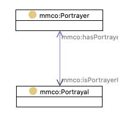

http://mmc.movielabs.com/ontology#Portrayal
Class 'Portrayal [mmco:Portrayal]'

type
Class [owl:Class]
label
Portrayal
subClassOf
is portrayal of
min 1
mmco:hasPortrayer
min 1
Depiction [mmco:Depiction]
preferred label
Portrayal
References
as domain (
is portrayal of
,
mmco:hasPortrayer
)
as equivalentClass (
Portrayal by person
)
as range (
is portrayer of
,
has portrayal
)
Generated with
TopBraid Composer
by
TopQuadrant, Inc.